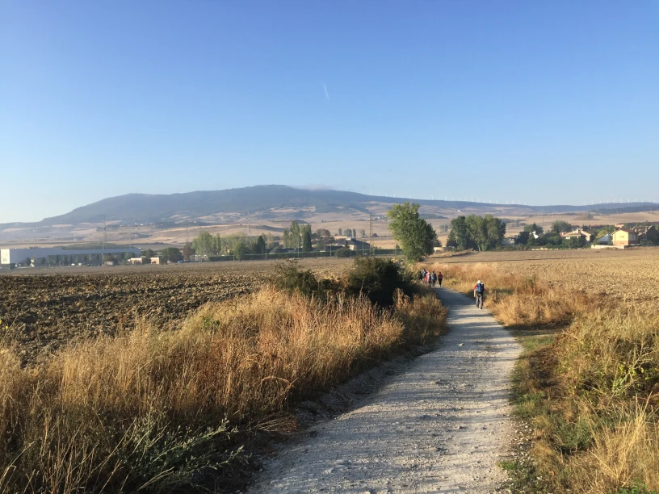
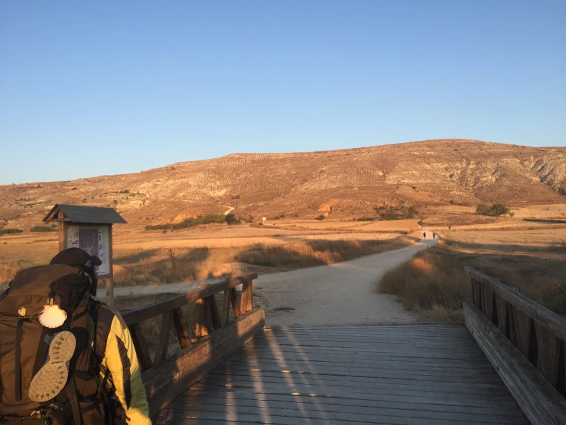

What is the Camino de Santiago?

The Camino de Santiago, or "The Way of Saint James," is a historic walking route that leads to Santiago de Compostela in Spain. While the most popular modern routes start in France or Portugal, many Europeans begin their journey from their home countries, eventually joining one of the main paths.
Traditionally, the Camino was a religious pilgrimage, but today, most walkers—known as peregrinos—embark on it for adventure, low-budget travel, and the chance to meet people from around the world. Despite this modern shift, there is still a sense of spiritual significance along the route, as it is dotted with stunning cathedrals and historic sites. These days, you will encounter travelers from all walks of life—representing a wide range of beliefs, including many who are not religious at all.
Why do people walk the Camino de Santiago?

Everyone has their own personal reasons, so there is no single answer to that question. However, one reason many choose to walk the Camino rather than trekking 600 miles in their own country is the incredible infrastructure tailored to travelers. Each day, you will journey from one town to the next, and almost every town along the route offers accommodations specifically designed for walkers, such as albergues (pilgrim hostels). Many cafés feature affordable daily "pilgrim menus," and you will often find small equipment shops where you can replace lost or broken gear.
Another unique draw of the Camino is the sense of camaraderie. Each year, tens of thousands of people from all walks of life—representing different nationalities, ages, and backgrounds—embark on the journey. Everyone is united by the same goal: reaching Santiago de Compostela. Along the way, you will find yourself connecting with fellow pilgrims, sharing stories, and forming friendships that often last long after the final steps of the journey. This shared experience is a big part of what makes the Camino so special.